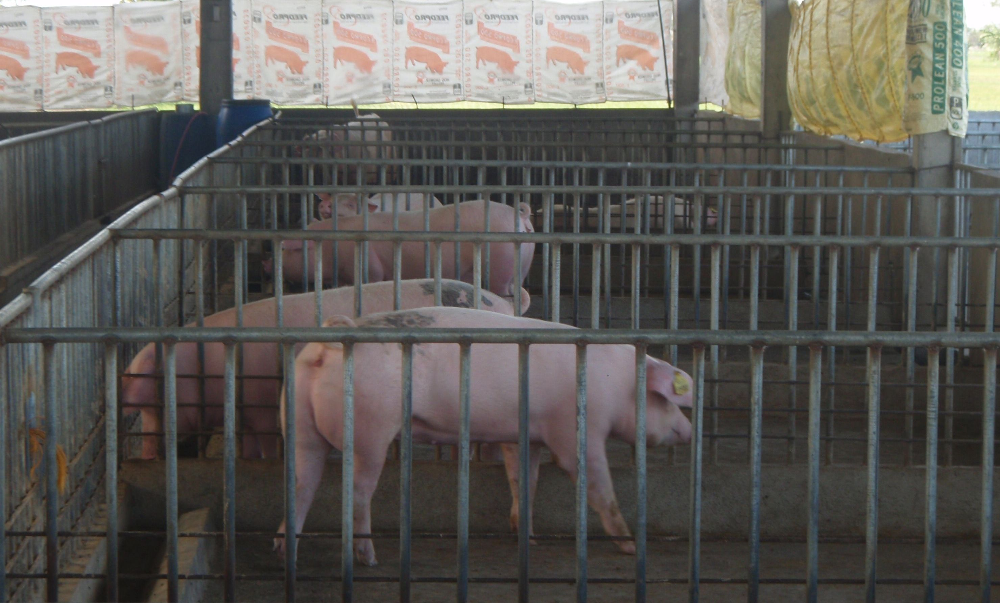
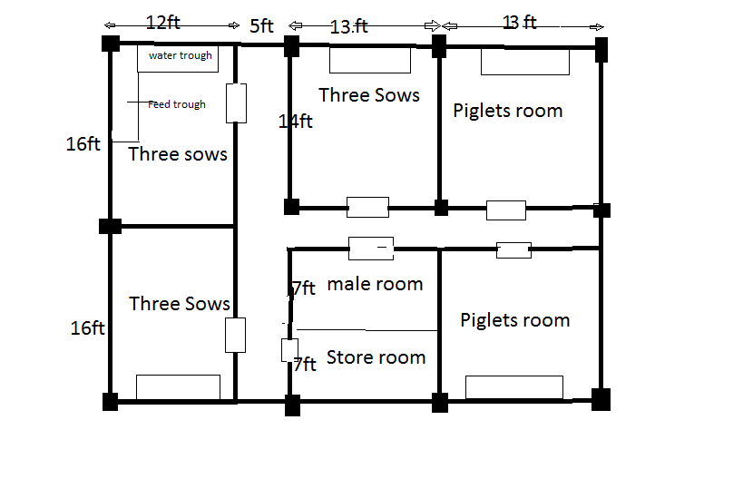
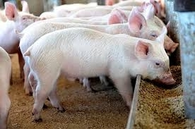
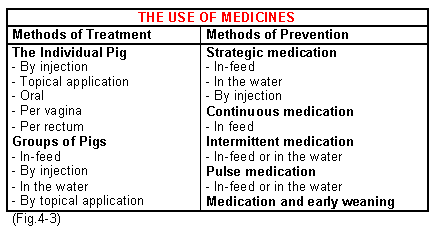

Pigs are very strong and they need sturdy living quarters. Air circulation and shade are vital. Pigs are very sensitive to temperature. Generally, adult pigs are very sensitive to hot temperature and the piglets are affected adversely by cold temperature. So, controlled temperature can help to maximize the growth and production. Keeping the piglets with their mother in a separate house is a good idea. Separate the feeding and bedding place and try to keep the house neat and clean always.
 
Feeding is the most important part of pig farming in Kenya. Because, good and nutritious food always ensure good production. Pigs can eat and consume both meat and grains. You can feed your pigs almost everything that includes roughage, kitchen garbage, agricultural waste, stalk from beverage companies etc.

You can also feed your pigs cooked table scraps, vegetables etc. Corn is the main food of pigs. But, having a diet with protein from soybeans or cooked meat will be effective for pigs. Vitamins and other supplements also help to grow faster. Piglets need higher protein contained food than the adult pigs. Along with sufficient nutritious food, always serve them sufficient amount of fresh and clean water according to their daily demands. Sufficient fresh water helps to keep the pig healthy and this directly impact the profit from pig farming in Kenya.
It is crucial to work closely with a vet. The veterinarian comes out atleast monthly to do herd health checks. If there is a sick pig who needs attention between the veterinarian’s monthly visits, he makes an extra trip to see the sick pig. If he feels it is necessary, they may do some diagnostic tests (like blood tests) to see what is wrong with the pig and what is the best way to treat it. If a pig is too sick to wait for the veterinarian’s scheduled visit, they may ask him to come out early.
Sometimes pigs get infections and need to be given antibiotics so they can get better. Antibiotics are always given under the direction of their veterinarian. Some antibiotics can be given as a shot.

When multiple pigs in the same pen start to get sick, it’s time to start thinking about other ways to give an antibiotic. Since an illness that starts with just one pig can quickly spread to others in the pen. It’s simply too time-consuming and too expensive to catch every pig, restrain them, and give an injection to each one. And this kind of handling can cause severe stress to already sick pigs. Adding antibiotics to the water is one way to easily get antibiotics to the sick pigs, and to also treat pigs that are in early stages of the illness but may not be showing clinical signs of disease yet.
In cases where the antibiotic of choice cannot be given in water, adding the antibiotic to the feed is a good alternative. Farmers would use feed-based antibiotics in the same situations where they might use water-based antibiotics, but a use a different antibiotic that cannot be delivered through the water.